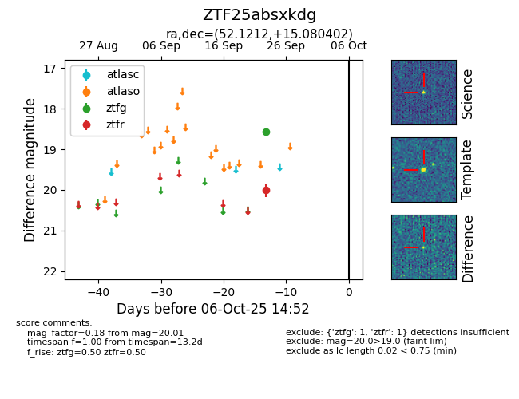

FINK: ZTF25absxkdg
Lasair: ZTF25absxkdg
ALeRCE: ZTF25absxkdg
ZTF25absxkdg (ztf,fink)
equatorial (ra, dec) = (52.1212,+15.08040)
galactic (l, b) = (169.8011,-33.14220)

last ztfg=18.57, ztfr=20.01
1 ztfg, 1 ztfr detections